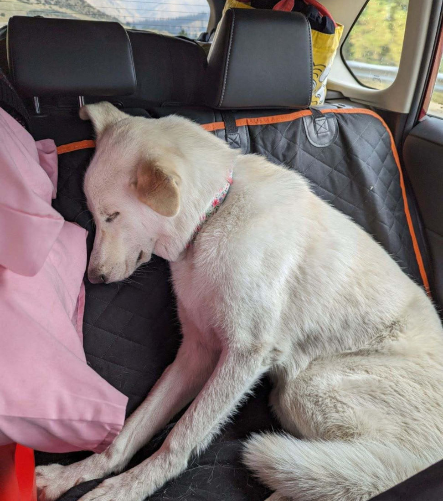

By Coach Matt | 9 min read
Six Tips For Better Sleep
Sleep is so important for a variety of reasons. It affects our health, mood, focus and recovery from exercise.
Lack of sleep can also make food cravings more intense! When you sleep well, you simply don't need to exert as much willpower to moderate your intake. It's a commonly underestimated factor when it comes to fat loss.
That said, the goal of this article is not to focus on why sleep is important. I'm going to assume you already understand this and are interested in some practical advice for how to improve the quality and consistency of your sleep.
I'm also going to assume that you've heard about the drawbacks of having caffeine too late in the day or staring at digital screens too close to bedtime so many times that it doesn't need to be repeated here. I want to focus more on the kind of tips we don't hear as often, the underrated and overlooked nuggets of sleep wisdom that took me a while to figure out and that many of my clients had never seriously considered before.
Keep the room dark
Installing black-out blinds on your bedroom windows can be an absolute game-changer if sunlight is disturbing your sleep before you're ready to wake up. An eye mask can be a great alternative if it's not practical to block your windows.
Though not as significant a factor, also pay close attention to how many seemingly innocuous lights are in your bedroom. Consider dimming the display on your clocks and any other electronic devices that allow you to adjust the ambient light they give off.
While sunlight does help your body to maintain its circadian cycle, unless the best time for you to wake up is the same as the time the morning sun is first hitting your bedroom windows, keeping your room dark until you awake and then opening your curtains or going out into a sunlit room is a great way to make sure your sleep cycle is synced with your preferred wake time.
If you need to get up at 9 AM, but your room starts getting bright at 7 AM, those last couple hours of sleep are probably taking a major hit; you might not be getting as many hours of quality sleep as you think.
Keep the room cool & fresh
We all know how difficult it is to sleep when you're hot and sweaty, but even being "comfortably warm" might be getting in the way of higher-quality sleep.
Experiment with setting your air conditioner a bit lower than normal and you might be surprised at how much better you sleep. If your room doesn't have an air conditioner (as was the case when I lived in Seattle) it might be worth it to invest in a standing unit. It made a huge difference for my wife and me.
While this seems to be a bigger factor for some than others, I sleep much better when the room is chilly and I have just enough coverage in sheets and blankets to not get too cold. One reason for this seems to be that my sinuses are quite finicky! They open up noticeably and I breathe a lot easier when the air is cool.
Speaking of breathing easy: maintaining fresh air flow in your room is an extremely underrated sleeping tip. Sometimes all you need to do is crack a window at night or keep your bedroom door open so your room doesn't get stuffy. You might also consider installing an oscillating fan or an air filter.
You don't need to have full-blown sleep apnea to benefit from these small changes in air quality that make it slightly easier to breathe at night.
Stretch a bit before bedtime
Every night before I get into bed, I take off my t-shirt and use it to stretch my chest and shoulders by bringing my arms overhead and behind my back while keeping my arms straight.
I've had this habit for a few years now. It takes less than a minute each night, but the daily consistency has helped me keep my shoulders flexible and that helps me to sleep on my side (my preferred position) without my shoulders feeling achy or stiff.
While I don't stretch my hips every night, I've also found that doing a few simple stretches for my hip flexors and glutes before bed also helps me to sleep more comfortably, especially if they're a little sore from a recent workout.
If you often feel restless and shift around a lot to get comfortable, a few minutes of stretching close to bedtime may help you sleep without having to wake up and adjust your position so often.
Do more steady cardio
I admit this is a more serious investment of time and energy compared to other simple tips like wearing an eye mask or opening a window, but it's also the most potent advice I can give you for improving your sleep quality.
We all know it's much easier to sleep when we're both calm and tired. For example, my high-energy dog fell asleep sitting upright in the back of our car on the way home from her first camping trip. She was already exhausted, and as soon as she felt safe and relaxed in a familiar setting she was OUT LIKE A LIGHT.
 DOG TIREDEven if it's bright outside and you're not in a particularly comfortable setting, when you're tired and relaxed enough you're going to fall fast asleep anyway. Long, steady cardio sessions aren't just great for general health and mood, they also help you get into that state where you can easily fall into a deep, rejuvenating sleep.
It can be a long walk, run, hike, bike ride, etc. Any form of exercise that requires steady focus and exertion for 30+ minutes will do. I've emphasized the word steady because while intervals are certainly fatiguing, they tend to amp you up and release adrenaline which can make it harder to go to sleep if you do them too close to bedtime. The same goes for lifting weights: whenever possible, leave yourself a few hours between your lifting sessions and bedtime so you can wind down.
One of the most obvious reasons we stay up too late is we're simply not tired yet. Yes, ingesting caffeine late in the day or staring at electronic screens late in the evening can contribute to feeling awake when it's time to sleep, but I think there's too much focus on avoiding the things that make us feel awake and not enough on doing the things that make us feel tired.
A long evening walk after dinner can benefit you in a lot of different ways, not least of which is the positive effect it has on sleep. It doesn't just make you tired either; all that movement can do wonders for helping you to physically relax and feel less restless in bed, more even than stretching.
Tire yourself out mentally
Building off the previous point about doing things that make you tired, cardio may be the best example overall due to its effect on both the body and the mind, but other great options help you sleep by fatiguing you mentally, such as reading or playing video games.
Everyone is going to have their own unique set of mentally fatiguing activities that work well in this regard. For example, my wife merely adopted gaming, whereas I was born in it, molded by it. One or two hours of a challenging game has a significant effect on how tired she feels, whereas I can play for hours before accumulating any notable mental fatigue.
Reading before you go to sleep works great for a lot of people, but what you read can make a big difference. An exciting science-fiction novel might keep you up all night, excited to find out what happens next, whereas a comparatively dry non-fiction book may have you nodding off rather quickly.
Perhaps journaling, solving puzzles or writing software code is your ticket to Snoozeville. You may have to do a little experimenting to find out what kind of activities quickly fatigue you, but once you do, consider making them a regular part of your evening routine.
Go to bed sober
I know this is easier said than done, believe me. I have a rich history of alcohol and cannabis use myself, and there have been stretches where I consistently used one or both for so long that I completely forgot how much better I slept without them.
I also understand that it feels like you sleep better with these recreational aides, but that's an illusion; they may help you get to sleep, but the way they disrupt or completely rob you of important sleep states such as deep R.E.M. means your quality of sleep suffers, i.e. it may take you 8-9 hours of intoxicated sleep to feel as rested as 6 hours of sober sleep, and you'll still feel more groggy in the morning.
I'm not saying you need to go "straight edge", but if you've been using drugs to relax most nights a week for quite a while, consider taking a break for a month and pay especially close attention to how it affects your sleep. At first, you will probably struggle with insomnia due to withdrawal and your brain needing to readjust, but after that, you should not only notice that you feel significantly more rested in less time, but you'll also wake up more easily and feel more focused throughout the day.
This is a great point at which to reiterate the wonders of cardio: a lot of folks have found that exercise is a fantastic way to achieve those feelings of euphoria and relaxation that we get from alcohol or cannabis. The phrase "runner's high" is more accurate than a lot of people realize; the exercise-induced euphoria it refers to largely stems from our endocannabinoid system, the same system that THC stimulates. You can literally get high as fuck from exercise, especially a long hard cardio session, without all the downsides that come with using exogenous substances.
You may find that, as you incorporate more exercise into your lifestyle, it becomes easier to limit your intake of mind-altering substances, perhaps to the point where you can quit entirely. Even if exercise doesn't affect those things, it will still have all kinds of wonderful effects on your health, mood, energy levels and of course sleep.
While you don't need to implement every one of these tips to experience tangible improvements to your sleep, I do encourage you to try and stack several of them together every once in a while. You'll never have a better night's sleep than after a long day packed with lifting, cardio, stretching, gaming and reading before you climb into bed completely sober in a cool, dark room full of fresh air.